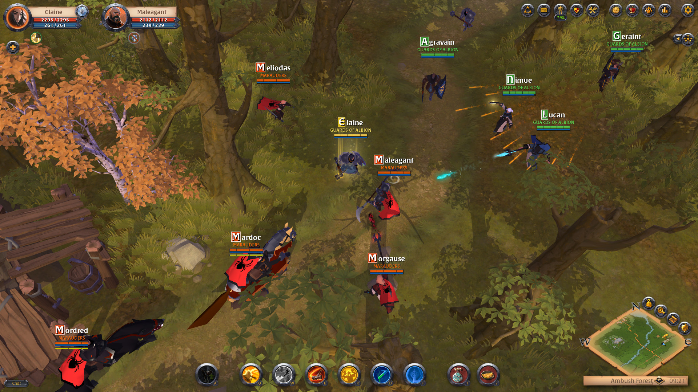
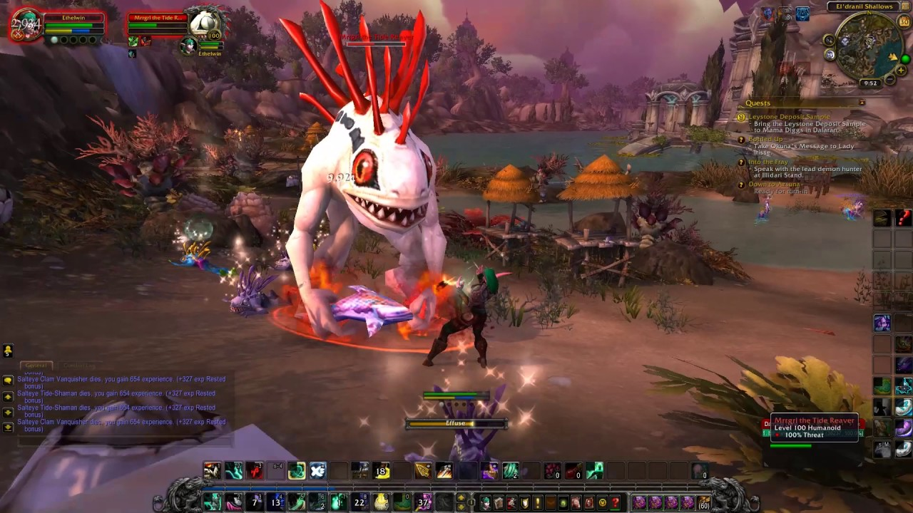
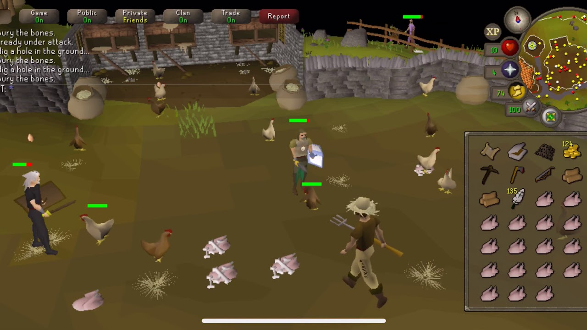
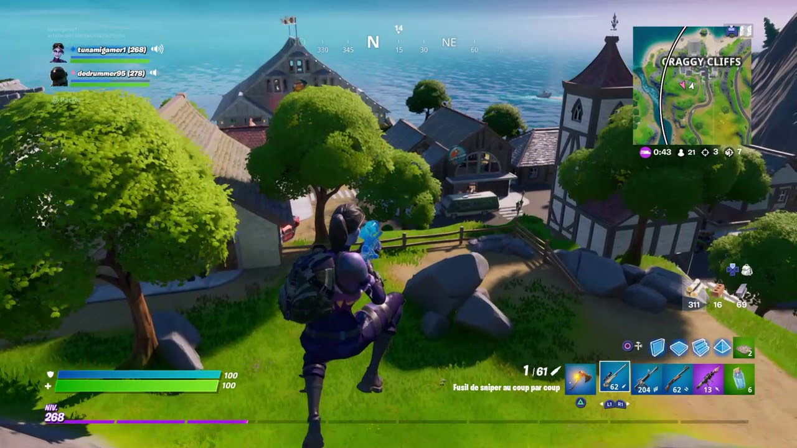

Albion Online is a full loot sandbox MMORPG set in an open medieval fantasy world. The game features a player-driven economy where nearly every item is player-crafted. Combine armor pieces and weapons suited to your playstyle in a unique, classless "you are what you wear" system. Players can go out and do activities in Albion's world in order to gain "Fame" (Similar to Experience of other similar MMORPG's) Through this Fame players can get access to other weapon and armour types, with stronger equipment requiring more Fame to use. Stronger gear is required as you progress through out the game.
1) Albion Online

2) World of Warcraft
World of Warcraft is similar to other MMORPGs, the game allows players to create a character avatar and explore an open game world in third- or first-person view, exploring the landscape, fighting various monsters, completing quests, and interacting with non-player characters (NPCs) or other players. The game encourages players to work together to complete quests, enter dungeons and engage in player versus player (PvP) combat, however the game can also be played solo without interacting with others. The game primarily focuses on character progression, in which players earn experience points to level up their character to make them more powerful and buy and sell items using in-game currency to acquire better equipment, among other game systems.

3) Elder Scrolls Online
Elder Scrolls Online is set in the continent of Tamriel and features a storyline indirectly connected with the other games in the Elder Scrolls franchise. It had been in development for seven years before its release in 2014. It initially received mixed reviews, but these improved significantly with the re-release and rebranding as The Elder Scrolls Online: Tamriel Unlimited, with critics praising the changes that were made.

4) Old School Runescape
Old School RuneScape is RuneScape how you used to know. It was first released in 2013 and is based on RuneScape as it was way back in 2007. It’s an open world fantasy MMORPG that is shaped by its players, with developers releasing new, regular content that has been voted for by the fans! Old School RuneScape has been played by over 260 million players since the 2001 release of RuneScape. Old School RuneScape unites the intricate mechanics of modern MMOs with the nostalgic point-and-click gameplay of early role-playing games.

5) Fortnite
Fortnite is a survival game where 100 players fight against each other in player versus player combat to be the last one standing. It is a fast-paced, action-packed game, not unlike The Hunger Games, where strategic thinking is a must in order to survive. Players skydive onto a small island, are equipped with an axe and must scavenge for more weapons, while simultaneously avoiding a killer electrical storm. As players are eliminated, the field of play also gets smaller, meaning players are put closer together. Updates regularly flash on screen detailing how another player was killed “X killed Y with a grenade”, adding to the sense of urgency.
